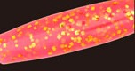
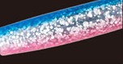
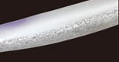
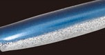

ぶっ飛び静完全セット
ぶっ飛び静完全セットはCultiva（カルティバ／オーナーばり）のサーフ用ジグヘッドワームです。
飛距離に定評のある「ぶっ飛び静」ヘッドに、堀田光哉さんが開発に協力した新ワーム「静シャッド4インチ」を初めて組み合わせたヒラメ用のセット。ヘッド・ワーム・フック・ワイヤーまですべてカルティバ純正パーツで完全武装しているので、袋から出してすぐにサーフで投げられるのが最大の魅力です。

画像出典:オーナーばり公式HP
スペック
- メーカー
- Cultiva（カルティバ／オーナーばり）
- タイプ
- ジグヘッドワーム（ジグヘッド＋ワームのセット）
- 重さ
- 20g（ライト）・24g（スタンダード）・30g（サーフ・ロングキャスト）
- ワーム
- 静シャッド4インチ
- フック
- ジグヘッドのフック（ヒラメシャフト）＋トレブルフック STX-45ZN（P-12 ハイパーワイヤーで接続）
- ターゲット
- ヒラメ・マゴチなどのフラットフィッシュ
- 価格
- 880円〜990円（税込）
- 発売
- 2026年
▼今すぐチェック

ぶっ飛び静完全セットの特徴
「飛ばして、浮かせて、底を擦らない」ヒラメ狙いの完全セット
-
堀田光哉さんと開発した「静シャッド4インチ」を初搭載
ぶっ飛び静の飛距離をサポートする形状と、食いのいい柔らかい素材を両立した新ワーム。絶妙なテールの設定で、飛距離を落とさずにしっかりアピールできる。
-
飛ばせて、巻けば浮き上がるぶっ飛び静ヘッド
遠投性能の高いぶっ飛び静ヘッドを採用。キャストで遠くまで届き、巻き始めると浮き上がるので、ボトムを擦りにくく根掛かりを避けながら底付近を引いてこられる。
-
すべてカルティバ純正パーツで完全武装
ジグヘッドのヒラメシャフトに加え、P-12 ハイパーワイヤーでつないだトレブルフック STX-45ZN を搭載。ショートバイトの多いヒラメもしっかり掛けられる。パーツを買い足して組む手間がいらない。
ぶっ飛び静完全セットの使い方
基本はただ巻き。遠投して着底させたら、底から1m前後のレンジを意識して、ボトムを擦らないギリギリの遅さでゆっくり巻いてきます。巻くとヘッドが浮き上がるので、スローに巻いても根掛かりしにくいです。
反応がない時は、リフト&フォールやストップ&ゴーを混ぜて、フォールで食わせる間を作る。ベイトが表層を意識している時は、着水後すぐにデッドスローで巻く使い方も有効です。
ぶっ飛び静完全セットの得意な状況
遠浅のサーフで、沖のカケアガリや離岸流まで届かせてヒラメ・マゴチを狙う状況が最大の出番。
シャッドテールのワームでスローに見せて食わせたい時や、根掛かりが気になる場所でボトム付近を丁寧に引きたい時に選びたい1本です。
飛距離と食わせを1セットでこなせるので、サーフで釣れるジグヘッドワームを1つ選ぶならまず候補に入れたい完全セットです。
ワンポイント
ワームが傷んだら、別売の静シャッド4インチに付け替えれば同じセッティングで使い続けられます。
カラーは、朝夕マズメ用の派手めな色（ピンク金ラメなど）と、日中の澄み潮用のナチュラルな色（パールなど）を1色ずつ持っておくと、時間帯や潮色に合わせやすくなります。
ぶっ飛び静完全セットの使い分け
| モデル | 価格 | 得意な場面 |
|---|---|---|
| 20g（ライト） | 880円（税込） | 浅いサーフ・波や風が穏やかな日。ゆっくり見せたい時に |
| 24g（スタンダード） | 935円（税込） | 迷ったらこれ。飛距離と巻きやすさのバランス型 |
| 30g（サーフ・ロングキャスト） | 990円（税込） | 遠投が必要な日・向かい風や水深のあるサーフに |
ぶっ飛び静完全セットは20g・24g・30gの3種類で、どの重さも同じ13色から選べます。基本は24gで、届かない日は30g、浅くて穏やかな日は20gと、サーフの状況に合わせて重さを選び分けるのがオススメです。
VJ-16・ジョルティ・サリューとの違い
| ルアー | 重さ／ワーム | 動き・フック | 得意な場面 |
|---|---|---|---|
| ぶっ飛び静完全セット（カルティバ） | 20・24・30g／静シャッド4インチ | シャッドテールのスローな食わせ。ジグヘッドのフック＋トレブル1本 | サーフのヒラメ・マゴチ。底付近をゆっくり引く釣り（本記事のモデル） |
| VJ-16（コアマン） | 16g／アルカリシャッド75mm | ボディ全体が揺れるバイブレーション。トレブル#10 | 河口・港湾・サーフのシーバス。遠投して広く探る釣り |
| ジョルティ（ブルーブルー） | 15・22・30g／4インチ | ハイピッチローリング＆尻振りの強波動。トレブル#5を2本 | 遠浅サーフのヒラメ・マゴチ、港湾・磯のシーバス。強いアピールで広く探る |
| サリュー（アダスタ） | 15・22・30g／4.5インチの細身ワーム | テールのカットでアクションの強弱を調整。遊動式ラインアイで90m超の遠投（30g） | とにかく飛距離が欲しいサーフ。シャローでのレンジキープ |
VJ-16との違い：VJ-16はヘッドの形でボディ全体を揺らす「バイブレーションジグヘッド」で、16gの1サイズ。河口・港湾・サーフでシーバスを広く探るのが得意です。ぶっ飛び静完全セットは20〜30gでより遠くへ飛ばせ、シャッドテールのゆったりした動きでサーフのヒラメにじっくり見せる、という役割の違いがあります。
ジョルティとの違い：重さの幅や4インチという大きさは近いですが、ジョルティはハイピッチローリングと尻振りの強い波動で目立たせるタイプで、トレブルフックを2本搭載。ぶっ飛び静完全セットは柔らかいワームのナチュラルな動きで食わせるタイプです。濁りや活性の高い日はジョルティ、スレた日や澄み潮はぶっ飛び静完全セットと使い分けられます。
サリューとの違い：サリューは「圧倒的な飛距離」がテーマで、空気抵抗の少ない細身の4.5インチワームと遊動式ラインアイで、30gなら90m以上飛ばせる遠投特化型。テールをカットしてアクションを弱められるのも特徴です。ぶっ飛び静完全セットはボリュームのあるシャッドテールでアピールと食わせを両立し、巻くと浮き上がるヘッドで底付近を丁寧に引けるのが強み。飛距離最優先ならサリュー、底付近でじっくり見せたいならぶっ飛び静完全セットが合います。
人気カラー
ぶっ飛び静完全セットは全13色展開。その中から人気カラーを紹介します。

ピンク金ラメピンクに金ラメの派手めなカラー。朝夕マズメや少し濁った日のアピールに。

ブルピンブルーの背中にピンクのお腹、銀ラメ入り。イワシをイメージしたサーフの定番色。

パールやさしく光るパールカラー。日中の澄み潮やスレた魚にナチュラルに見せたい時に。

ブルーバックブルーの背中に銀ラメの小魚カラー。晴れた日や澄み潮のベイトパターンに。
画像出典:オーナーばり公式HP
▼今すぐチェック
ぶっ飛び静完全セットに似ているルアー
-
 ジョルティ
ブルーブルー
詳細はこちら＞
ジョルティ
ブルーブルー
詳細はこちら＞
15・22・30gの4インチジグヘッドワーム。ハイピッチローリングの強い波動とトレブル2本で、アピール重視で広く探りたい時に。
-
 VJ-16
コアマン
詳細はこちら＞
VJ-16
コアマン
詳細はこちら＞
16gのバイブレーションジグヘッド。ボディ全体が揺れる動きで、河口や港湾のシーバスをただ巻きで探るなら。
-
 サリュー
アダスタ
詳細はこちら＞
サリュー
アダスタ
詳細はこちら＞
15・22・30gのサーフ用ジグヘッドワーム。細身の4.5インチと遊動式ラインアイで、とにかく飛距離が欲しい時に。